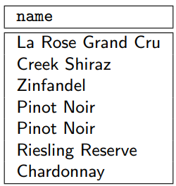
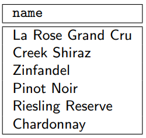
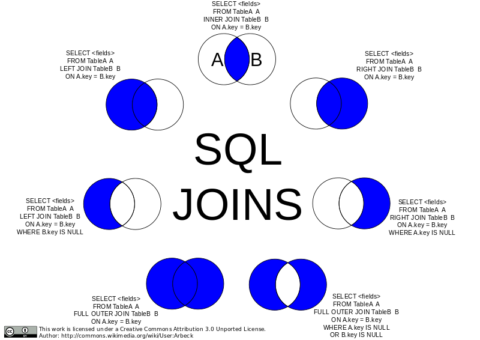
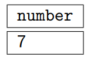
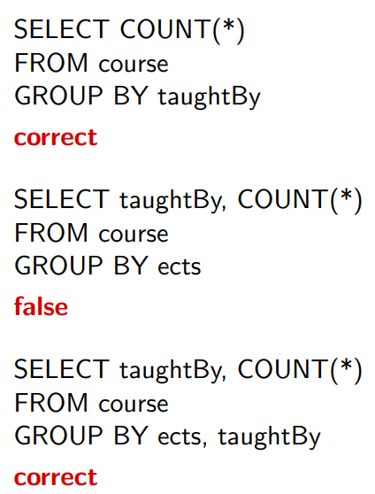
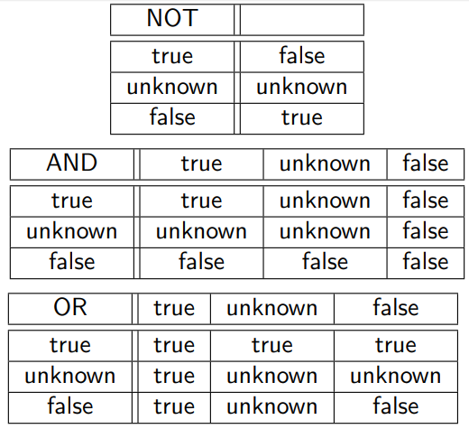
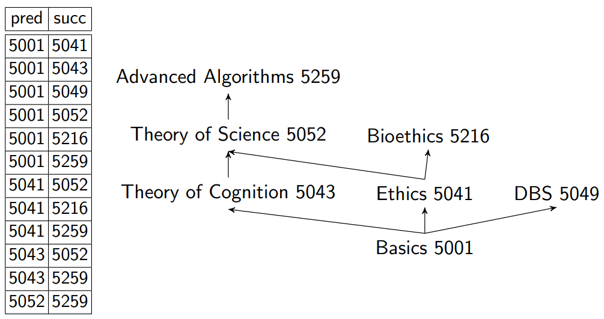

SQL¶
Learning Goals
- Explain and use the SQL data model
- Create non-trivial database tables
- Modify non-trivial database tables
- Create non-trivial SQL statements
SQL¶
SQL is a declarative query language ("what" not "how")
It consists of multiple parts
Data Definition Language (DDL)
- Create/change the schema
- create, alter, drop
Data Manipulation Language (DML)
- Changes to an instance
- insert, update, delete
Data Query Language (DQL)
- Evaluate queries on an instance
- select * from where ...
Transaction Control Language (TCL)
- Controls transactions
- commit, rollback
Data Control Language (DCL)
- Grant/revoke access rights
- grant, revoke
Basic Data Definitions¶
Data Types
- character(n), char(n)
- character varying(n), varchar(n)
- integer, smallint
- numeric(p,s), decimal(p,s), ...
- p - precision: max number of digits in total
- s - scale: number of digits after the comma
- real, double
- blob or raw for very large binary data
- clob for large string attributes
- data for dates
- xml for xml documents
- ...
varchar vs char
- Both are limited to a length of n
- char always uses n bytes
- varchar uses only the required place, plus length information
Create Tables¶
1 2 3 4 | |
Is equal to
1 2 3 4 | |
The PRIMARY KEY constraint includes the NOT NULL and UNIQUE constraints.
Foreign Keys¶
1 2 3 4 5 6 7 8 | |
Default Values¶
When inserting data into a table, all values that are not explicitly stated are set to null (standard default value).
When defining a table, we can specify another default value
1 2 3 4 5 6 7 | |
Here the default value of color will be 'red'
Sequence Number Generators¶
Sequence number generators automatically create continuous identifiers.
1 2 3 4 5 6 7 8 9 | |
Alter Tables¶
Initial version
1 2 3 4 5 | |
Change Table Definitions¶
Add an attribute
1 2 | |
Delete an attribute
1 2 | |
Change an attribute type
1 2 | |
Deletion of a Table¶
Delete a table
1 | |
Delete the content of a table
1 | |
Cannot be used if there is another table with a foreign key referencing the table that we want to delete.
Data Insertion¶
Standard insertion w3schools Insert Into:
1 2 | |
1 2 3 4 | |
Rights Management¶
DCL
Grant access rights
1 2 3 | |
1 2 3 | |
Revoke access rights
1 2 3 | |
Privileges (rights) on tables, columns,. . . : select, insert, update, delete, rule, references, trigger
Query Language¶
Basic building block of an SQL query (SFW block)
SELECT <list of columns>- projection list with arithmetic operators and aggregation functions
FROM <list of tables>- list of involved tables, with optional renaming
WHERE <condition>- selection and join conditions, nested queries
Relational algebra → SQL
- projection π →
SELECT - cross product × →
FROM - selection σ →
WHERE
Cross Product¶
If the from clause enumerates more than a single table, the cross product is computed.
1 2 | |
The result is the set of all combinations of tuples in the involved tables!
Duplicate Elimination¶
The DISTINCT keyword removes duplicated entries.
1 2 | |

1 2 | |
Corresponds to the projection operation in relational algebra!

Set Operations¶
Set operations require union compatibility:
-
same number of attributes with compatible domains.
-
domains are identical
- domains are based on characters (length does not matter)
- domains are based on numerical values (exact type does not matter, e.g., integer and float)
Result schema: column names of the first table
For set operations, duplicate elimination (e.g., UNION DISTINCT) is the default!
1 2 3 4 5 | |
1 2 3 4 5 | |
1 2 3 4 5 | |
Intersection (INTERSECT) and set minus (EXCEPT) are also supported.
Nested Queries¶
Subqueries are necessary for comparisons to sets of values.
- Standard comparisons in combination with quantifiers:
ALLorANY - Special keywords to access sets:
INandEXISTS
Uncorrelated Subqueries¶
Notation:
attribute IN ( SFW block )
1 2 3 4 | |
Comparison of a value to a set of values
Negation in combination with the IN keyword
Simulation of the difference operator $$ \mathrm{\pi_{vineyard}(producer) - \pi_{vineyard}(wine)} $$ corresponding SQL query
1 2 3 4 | |
Correlated Subqueries¶
The subquery is correlated to the parent query. See the WHERE clause:
1 2 3 4 5 | |
Computes names of professors that teach any courses.
Quantifiers IN vs EXISTS¶
IN
- Is the “left tuple” contained in the “right set”?
- Example:
(studid, courseid) IN (SELECT * FROM takes);
EXISTS
- Is the “right set” nonempty?
- Example:
EXISTS (SELECT * FROM takes WHERE ...);
There are more quantifiers: ANY and ALL
Advanced SQL¶
Extension of the SFW block
FROMclause: additional join variantsWHEREclause: additional types of constraints and quantifiersSELECTclause: application of scalar operations and aggregate functions
Joins¶
Join variants
CROSS JOINNATURAL JOINJOINorINNER JOINLEFT,RIGHT, orFULL OUTER JOIN
Standard formulation:
1 2 3 | |
Alternative Formulation
1 2 3 | |
See joins visualized with this tool

Aggregate Functions¶
How can we formulate the following queries in SQL?
- Average price of all articles on sale
- Total sales volume of all sold products
Aggregate functions compute new values for a column, e.g., the sum or the average of all values in a column.
Aggregate functions:
AVG,MAX,MIN,COUNT,SUM
The argument columns (except in case of COUNT(∗)) can optionally be accompanied by the keyword DISTINCT and ALL.
DISTINCT- before evaluating the aggregate function, duplicates are removed
ALL- duplicates are considered for evaluation (default!)
Null values are removed before evaluation (except in case of COUNT(∗)).
Examples¶
Number of wines
1 2 | |

The number of different regions that produce wine
1 2 | |
The names and years of wines that are older than the average
1 2 3 | |
Aggregate Functions in the WHERE Clause¶
Aggregate functions produce a single value \leadsto usable in comparison with constants in the WHERE clause.
All vineyards producing a single wine
1 2 3 | |
Nesting of Aggregate Functions¶
Nesting of aggregate functions is not allowed!
1 | |
Instead
1 2 | |
Grouping¶
Computation of the aggregate function per group
Group By Xmeans put all those with the same value for X in the one group.Group By X, Ymeans put all those with the same values for both X and Y in the one group.
Notation
1 2 3 4 5 | |
Computation of the aggregate function per group
1 2 3 | |
- All tuples with the same value for column
taughtByform a group - The sum is computed for each group
Mistakes¶
- SQL generates one result tuple per group
- All columns referenced in the
SELECTclause must either be listed in theGROUP BYclause or involved only in aggregate functions

The HAVING Clause¶
Null Values¶
Null values may lead to unexpected query results.
1 2 | |
And
1 | |
Produces the same result, because tuples with null values in column semester are not counted
Arithmetic expressions
- "Propagation" of null values
- null + 1 \leadsto null
- null * 0 \leadsto null
Comparison Operations
- SQL has a three-valued logic:
true,false, andunknown - If at least one argument is null, then the result is
unknown studid= 5 \leadstounknownwheneverstudidis null
Logical expressions are evaluated according to the following tables

Null Values in Where Clause and Grouping¶
WHERE clause
- The
WHEREclause forwards only tuples evaluated totrue - Tuples evaluated to
unknownwill not be part of the result
Grouping
- null is interpreted as an independent value
- Results in its own group
Recursion¶
Which courses need to be taken before taking course “Theory of Science”?
\relation{requires}{predecessor, successor}
\relation{course}{courseid, title, ects, taughtBy}
Non-Recursive
This query only finds direct predecessors:
1 2 3 4 | |
Recursive
1 2 3 4 5 6 7 8 9 10 11 | |

General Recursive SQL¶
1 2 3 4 5 6 7 8 9 | |
Result: 5050
Avoid Infinite Recursion¶
- Most DBMS have a parameter that limits maximum recursion depth
- Encode it directly in the query
1 2 3 4 5 6 7 8 9 10 11 12 | |
Limiting Size of Results¶
Using LIMIT is accepted in exam solutions
1 | |
Other possible solutions can be seen in DBS5 Slides p. 169
Views¶
Examples of views
1 2 3 4 | |
1 | |
1 2 3 4 5 | |
1 | |
Views can be used to represent derived attributes (ER diagram).
Altering Views¶
REPLACE VIEW expects the same columns in the same order with the same types.
1 2 3 4 | |
Alternative: Delete the view and recreate it afterwards, or non-standard SQL extensions, e.g., PostgresSQL’s ALTER VIEW
1 2 3 4 5 6 7 | |
Views vs Materialized Views¶
(Dynamic) view
- Represents a macro of a query
- The query result is not pre-computed but computed when used
Materialized View
- The query result is pre-computed
- Computation load before any queries are executed
More on views in DBS5 slides p. 184
Integrity Constraints¶
-
Additional instrument to avoid inconsistency.
-
Try to avoid insertion of inconsistent data
Static Integrity Constraints¶
Each instance of a database must fulfill all static integrity constraints.
1 2 | |
Restricting the domain of valid values
1 2 | |
Enumeration of valid values
1 2 | |
Definition of user-defined domains
1 2 3 | |
1 2 3 4 5 | |
Dynamic Integrity Constraints¶
Referential integrity requires that foreign keys must always reference existing tuples or be null.
What happens if there is no professor with empid 007?
1 2 | |
And how can we prevent the insertion?
Definition of Keys¶
Candidate keys
UNIQUE- A table can have multiple
UNIQUEconstraints - Allows null values!
Primary Keys
PRIMARY KEY- At most one per table
- Implies
UNIQUE NOT NULL
Foreign Keys
FOREIGN KEY- Allows null values
Handling Updates¶
Dynamic integrity constraints need to be fulfilled by each change of a database.
In response to changes of referenced data:
- Rejection of updates (default behavior)
- Propagation of updates (CASCADE)
- Set references to “unknown” (SET null)
In addition available in PostgreSQL
- Set to a default value (SET DEFAULT)
Examples in DBS5 slides p. 204
Complex Constraints¶
1 2 3 4 5 6 7 8 9 10 11 | |
- The CHECK clause is evaluated for each update or insert
- Operation is rejected if the check is evaluated to false! True and unknown do not violate the constraint!
- Not (yet) supported by PostgreSQL:
- ERROR: cannot use subquery in check constraint
- Workaround by using triggers
Appendix¶
See Appendix in DBS5 slides p. 222